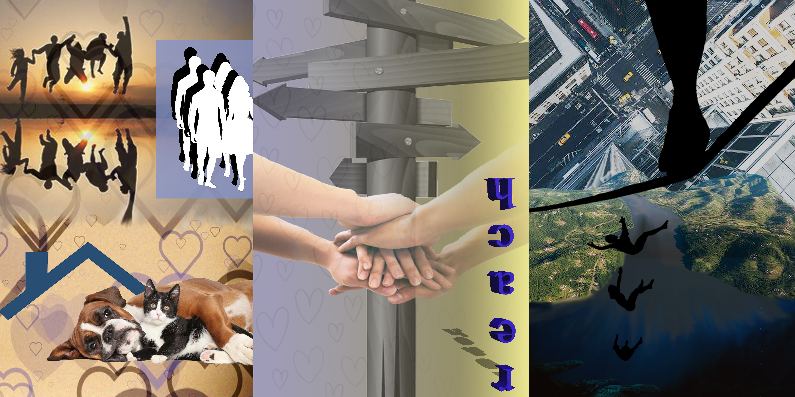

Assignment 6: Contrasting Triptych
Fall 2018
The goal of this assignment was to have two contrasting ends of a triptych, one end being positive and the other being negative, with a middle piece connecting the ends by having a sort
of happy medium.
The left panel is meant to represent happiness through images such as those of pets, love, friendships, and home. Each of the images on this panel represent ideas of love and support,
both being things that lead to happiness and success for many individuals.
The right panel is meant to represent confusion and fear. The silhouette of a tightrope walker followed by silhouettes
of an individual falling represent a multitude of fears, including the fear of success, the fear of failure, the fear of not being good enough, and the fear of the unknown.
The height of the office buildings to the depth of the mysterious ocean below build on the idea of fears because they represent the great range to which
fears exist and are valid. They also can be interpreted as presenting literal ideas.
The middle panel ties these ideas together through the use of figures which present ideas such as gaining support, reaching out for help, or
exploring a multitude of avenues.
Altogether, my triptych explores my own life and shows simple ideas with the use of various elements.
